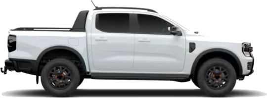

Ford Innovation Challenge III
Data-Driven Powertrain Intelligence
Powertrain
Health Copilot
Anticipamos la pérdida de eficiencia de combustión meses antes de que llegue al taller, con la telemetría que Ford ya recibe.
Equipo San Miguel
El problema
Detrás de la pérdida de eficiencia hay un filtro de partículas que no termina de limpiarse.
- Trayectos cortosEl motor no sostiene la temperatura que necesita la limpieza del filtro.
- Limpieza incompletaLa regeneración se corta antes de quemar todo el hollín.
- Hollín acumuladoCada limpieza a medias deja hollín y el filtro se va saturando.
- Pérdida de eficienciaEl motor rinde menos y el problema recién aparece en el service.
Lo que plantea el desafío
La degradación viene del uso: trayectos cortos y una operación que no deja completar los ciclos naturales de recuperación del sistema.
Lo que muestran los datos
Ese ciclo es la regeneración del filtro de partículas: la carga de hollín sube, el filtro se limpia y los mensajes de la ECU siguen el ciclo normal, lleno, sobre el límite y limpieza.
La telemetría muestra la saturación del filtro 90 días antes del evento.
Con las mismas falsas alarmas que la ECU, detecta muchos más eventos.
de los eventos, detectados antes de que ocurran
Medido en 198 vehículos que el modelo nunca vio, con 56 eventos. Las líneas finas son el intervalo de confianza del 95 %.
Unidad de Ibagué · día −129 del evento
En esta unidad, la alerta se encendió 129 días antes del evento.
de anticipación mediana en toda la flota, entre la primera alerta y el evento
recorridos en ese margen (mediana de la flota): tiempo para agendar el turno o cambiar el hábito
Unidad de Ibagué · día −129, llega el aviso
Y le dice al conductor qué hacer para evitarlo.
Lo que pasó en Ibagué, a escala de flota: un modelo, tres canales.
Red de concesionarios
Ranking diario de la flota por riesgo, con los hábitos que lo explican. La alerta marca al 20 % de mayor riesgo, así que el volumen es fijo por diseño: el taller sabe cuántos turnos reservar.
Conductor
Una recomendación concreta en la app: qué viaje hacer y en qué momento de su semana. Si el manejo no alcanza, lo deriva al concesionario.
Dentro del vehículo
Una versión compacta del modelo en la ECU o el módulo telemático, para avisar aun sin conectividad. Solo informaría: nunca actuaría sobre el motor.
Antes de los modelos
Seis pasos para que los datos digan lo que realmente pasó.
- Leer
Venta, viajes y mensajes de la ECU, con DuckDB.
- Validar
Valores fuera de rango, a nulo. Viajes imposibles, afuera.
- Deduplicar
40.760 viajes repetidos: queda uno, siempre el mismo.
- Etiquetar
Fechas de la lista v2. Ante la duda, fuera de los sanos.
- Ubicar en el calendario
Producción reconstruida desde el primer viaje en planta.
- Reconstruir y agregar
Limpiezas desde la caída del hollín. Una fila por vehículo y día.
Cada descarte queda registrado en un reporte de calidad.
De 12 millones de registros a 282.378 días de vehículo.
- 12,4 Mregistros crudos
2,52 M viajes y 9,9 M mensajes de la ECU, leídos con DuckDB.
- 41.546viajes descartados
40.760 duplicados y 786 imposibles: odómetro que retrocede, más de 200 km/h o más de 24 h.
- 992vehículos
277 con al menos un evento y 715 sanos. Los 27 que figuraban en ambas listas salen de los sanos.
- 282.378vehículo-días
Viajes y mensajes agregados por día local: la unidad sobre la que predice el modelo.
Cuando una señal de la flota se cortó, el sistema siguió viendo.
El 26 de mayo de 2026 dejaron de llegar los eventos de regeneración de toda la flota
4 a 41 %Así habría subido el riesgo medio de los vehículos sanos usando la señal tal como llegaba.
Reconstruimos cada limpieza desde la carga de hollín, que nunca se cortó
91 %de las limpiezas reales recuperadas, validado contra la señal original. Sumó 37 % más casos para entrenar.
En producción las señales se cortan. Este sistema lo detecta y se recupera.
Cómo funciona por dentro
Con los datos listos: lo que hay detrás de cada número que vieron, y cómo nos aseguramos de que no sea un espejismo.
- Variables170, solo del pasado
- Modeloscuatro, más un stacking
- Validaciónpor vehículo y en el tiempo
170 variables por día, calculadas solo con el pasado.
Viajes, km, proporción de viajes cortos, urbanos, en frío y en ralentí, ponderadas por viaje.
Ventana de 7 días menos la de 90: si el deterioro se acelera.
Cuánto se aleja hoy de su propia historia, sin incluir el último mes.
Km y días desde la última limpieza, limpiezas parciales y cortadas.
Cocientes que no crecen con la edad del vehículo.
Fuera del modelo: edad, odómetro y fecha. Los vehículos con evento se produjeron desde 2023 y los sanos desde 2025; con esas variables aprendería "viejo es igual a falla". Un test automático recalcula todo con la historia cortada a la mitad y exige resultados idénticos.
Cada día se pregunta: ¿habrá evento en 30, 60 o 90 días?
de días positivos. Un día solo cuenta como negativo si vimos los días siguientes completos; si no, no participa.
Cada decisión se tomó sin mirar el examen.
Los días de un mismo vehículo se parecen demasiado: partir por fila filtraría su identidad.
Hiperparámetros, pesos del stacking y umbral de alerta salen de predicciones sobre vehículos no vistos.
Bootstrap de vehículos completos, porque sus días están correlacionados.
Cuatro modelos que miran distinto, combinados por un quinto.
El grosor de cada flecha es su peso en el stacking a 90 días, aprendido solo con predicciones fuera de fold. Además calibra las probabilidades: Brier 0,064 a 90 días.
El motor principal: un LightGBM por horizonte, regularizado a propósito.
árboles, tasa de aprendizaje 0,03
hojas por árbol
días como mínimo en cada hoja: nada de reglas a medida de un vehículo
de las variables por árbol, 80 % de las filas, L2 = 10
El 0,99 es memoria de vehículos ya vistos. Lo que importa: fuera de fold y holdout coinciden, así que generaliza a vehículos nuevos. La grilla de 8 configuraciones se evaluó solo con los folds de entrenamiento.
Una red que lee 180 días de telemetría y estima el riesgo semana a semana.
La cabeza de riesgo discreto estima la probabilidad de evento en cada una de las próximas 26 semanas con la verosimilitud con censura. De ahí salen P(≤30, 60, 90 días), coherentes entre sí por construcción, y la vida útil restante.
Ordena bien el riesgo, y mejor cuanto más cerca está el evento.
198 vehículos de holdout con 56 eventos; intervalo del 95 % por bootstrap de vehículos. Fuera de fold y holdout coinciden.
De una probabilidad a una alerta que el taller puede planificar.
- Suavizar
Media de 7 días del riesgo a 90 días: un día raro no dispara nada.
- Comparar con la flota
Alerta si el vehículo está en el 20 % de mayor riesgo de los últimos 30 días. Causal y sin etiquetas.
- No repetir
30 días de enfriamiento: una alerta por episodio, no una por día.
| Política, en holdout | Detección (IC 95 %) | Anticipación mediana | Falsas alarmas por vehículo y año |
|---|---|---|---|
| Advertencia actual de la ECU | 55 % (43 a 68) | 100 días, 4.313 km | 0,60 |
| Umbral fijo, 10 % de días sanos | 84 % (73 a 93) | 105 días, 3.702 km | 0,65 |
| Umbral relativo, top 20 % de la flota | 88 % (79 a 96) | 125 días, 4.354 km | 0,61 |
El punto de operación se eligió fuera de fold: la mayor detección sin superar las falsas alarmas de la ECU. A igual tasa de falsas alarmas, fijo y relativo rinden parecido; el relativo además fija cuántos turnos pedir al taller.
Lo que más pesa es cómo se usa el vehículo y cómo se limpia el filtro.
El simulador de hábitos tiene la física como restricción.
Si esto aumenta, el riesgo nunca baja
- Viajes cortos, micro y urbanos
- Viajes sin llegar a temperatura
- Arranques en frío y ralentí
- Limpiezas cortadas al apagar
- Km y días desde la última limpieza
Si esto aumenta, el riesgo nunca sube
- Km por viaje
- Velocidad media
de AUC es lo que cuesta (0,771 contra 0,780). A cambio, ninguna recomendación puede empeorar el riesgo simulado.
Sin restricciones, el modelo aprendía del diseño de la muestra que "más ruta es más riesgo" y recomendaba lo contrario de lo correcto. Entrenado con 36 variables y estas restricciones, la receta mínima alcanza en el 85 % de los casos con margen por manejo.
Hacia el futuro rinde menos: por pocos eventos y, sobre todo, por deriva.
Recortar filas no cuesta nada; recortar vehículos con evento a los 66 que había al corte cuesta 0,05. El resto, 0,08, es el período: la flota envejece y los eventos por 100 vehículos activos pasan de 1,3 a 8,6 por trimestre. El reentreno mensual suma +0,035 a +0,038 (IC 95 % excluye 0); en vehículos nuevos la palanca es acumular eventos.
Lo que todavía no sabemos, y cómo lo vamos a medir.
Por eso los intervalos son anchos (79 a 96 %). El modo sombra suma eventos reales cada mes.
El 85 % y el −46 % salen del modelo. El piloto aleatorizado mide si los eventos bajan de verdad.
Puede reflejar cómo se armaron las listas de la muestra. El AUC dentro de fallados no depende de él.
Los datos no traen GPS, presión de neumáticos ni carga del filtro en %. Son candidatas para la próxima versión.
Entre USD 0,3 y 0,7 millones de ahorro adicional por año, cada 50.000 vehículos.
Lo que cuesta
- Licencias de software
- USD 0
- Hardware a bordo
- USD 0
- Nube, por año
- USD 3.500 a 5.000
- Integración inicial
- 4 a 6 meses
El caso se sostiene si cada evento cuesta más de USD 340. Limpiar el filtro cuesta USD 400 a 650 y reemplazarlo, USD 2.400 a 3.300.
Supuestos a validar con Ford: 0,05 eventos por vehículo y año, USD 1.800 por evento y 60 % de eventos evitados cuando la alerta llega a tiempo. El rango usa las tasas de la prueba principal y las de la puesta en marcha simulada.
Del taller imprevisto al mantenimiento planificado.
| Hoy | Con Powertrain Health Copilot | |
|---|---|---|
| Eventos anticipados | 55 % | 88 %, con las mismas falsas alarmas |
| Momento del aviso | Cuando el filtro ya está sobre el límite | Meses antes, cuando el patrón de uso empieza a cambiar |
| Qué hace el cliente | Ir al taller | Un cambio de hábito concreto; el taller, solo si no alcanza |
| Explicación | Un mensaje de estado | Qué hábitos pesan en el riesgo de su vehículo |
| Concesionario | Demanda imprevista | Ranking diario y volumen de alertas acordado |
Medido en 198 vehículos que el modelo nunca vio, con 56 eventos: 0,61 falsas alarmas por vehículo y año, contra 0,60 de la advertencia actual de la ECU.
Un camino a producción que reduce el riesgo en cada paso.
3 meses
Modo sombra
Corre sobre la flota real sin notificar y se compara con los eventos que ocurren.
Avanza si iguala o supera a la ECU.
6 meses
Piloto con conductores
Un grupo recibe recomendaciones y otro no, asignados al azar.
Avanza si baja la cantidad de eventos.
Continuo
Flota completa en la nube
Reentreno mensual automático y volumen de alertas acordado con los concesionarios.
Sigue si el desempeño es estable mes a mes.
A futuro
Alerta a bordo
Explorar con Ford una versión compacta dentro del vehículo.
Avanza si la arquitectura de la ECU lo permite.
El mismo método sirve para otras degradaciones que dejan rastro en la telemetría: EGR, catalizador, batería y aceite.
Unidad de Ibagué · 2 de marzo de 2026 (día 0)
Su evento llegó ese día. El copiloto lo habría avisado 129 días antes.
Empecemos con tres meses en modo sombra: sobre la flota real, sin notificar a nadie, comparando cada alerta con los eventos que ocurran.
de eventos anticipados, contra 55 % hoy
de margen mediano para actuar
de ahorro por año cada 50.000 vehículos
